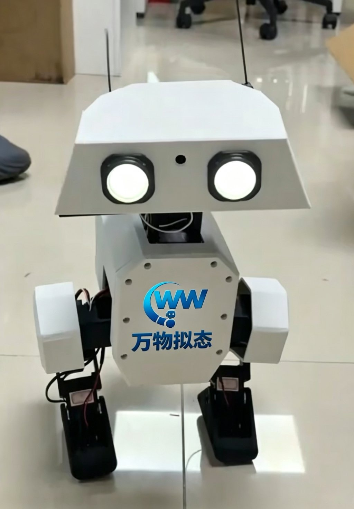
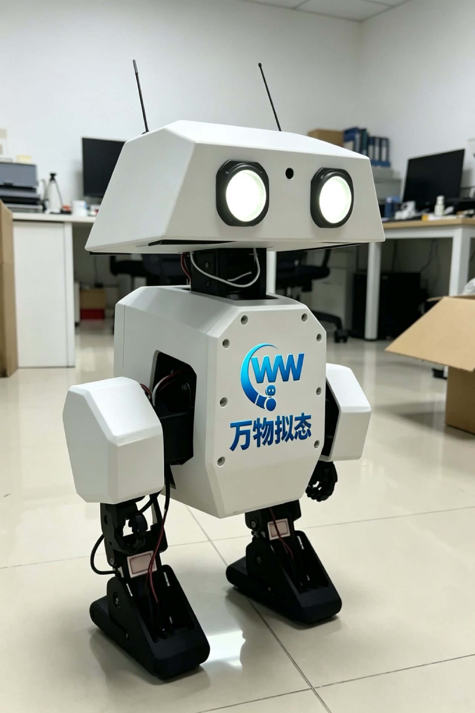
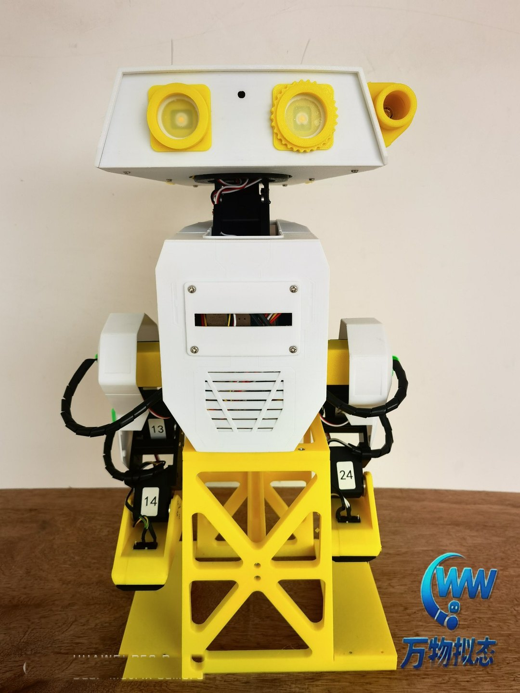
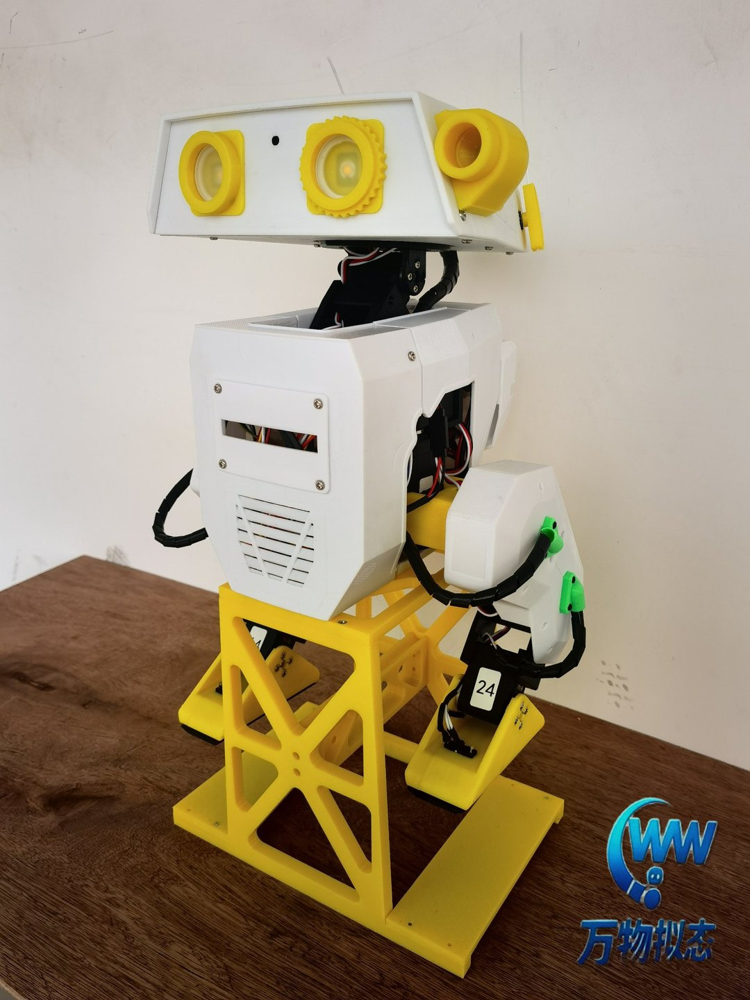
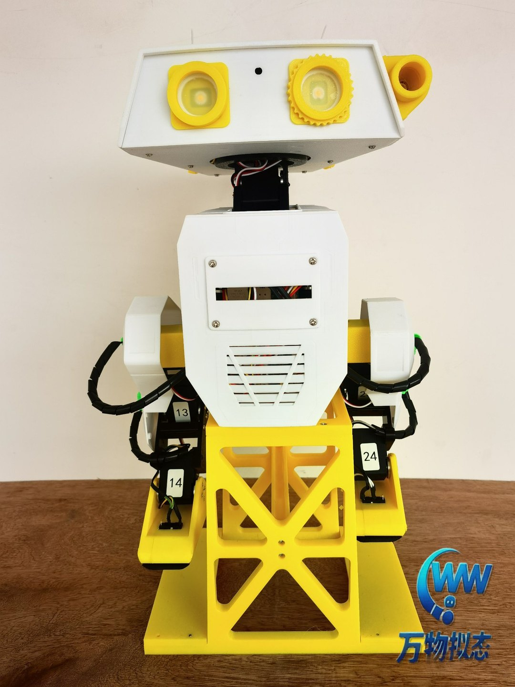
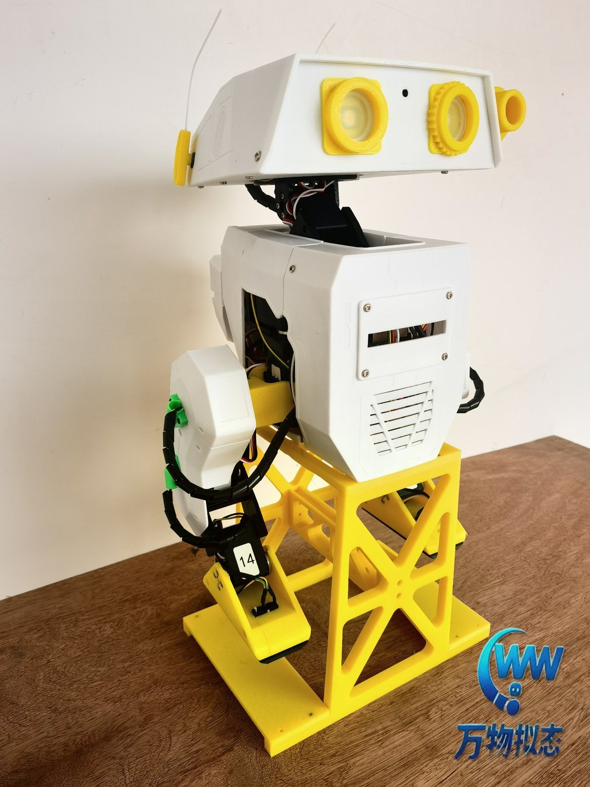
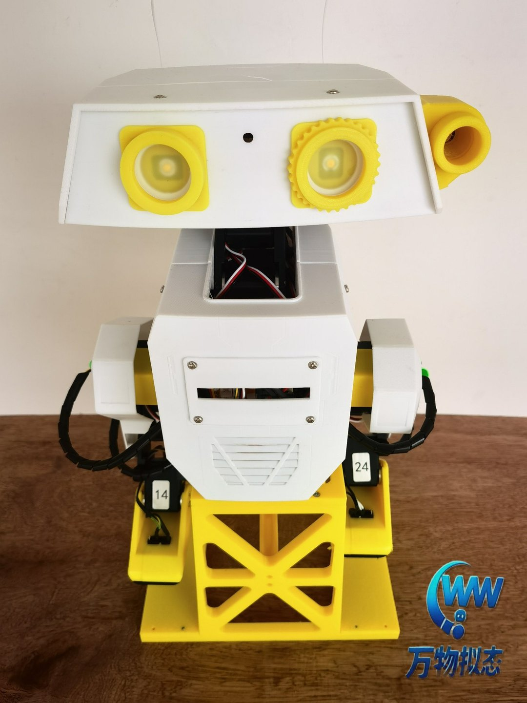

v2 · An open-source bipedal robot replicating Disney BDX
A charming ~42 cm bipedal robot with 14+2 whole-body joints, walking via Raspberry Pi reinforcement learning. All 35+ 3D-printed parts are open source —Appearance, colors, and functions — all defined by you。







From shell color to control algorithms, from teaching materials to research experiments — every layer of OpenDuck Mini is open to developers.
35+ 3D-printed structural parts (PLA/TPU) — colors, finishes, and shell shapes can all be customized to create a one-of-a-kind campus IP robot.
Mechanical CAD, BOM, on-board software, simulation environment, and RL policies are all open source (Apache-2.0), safe for commercial use.
Reserved camera, microphone, LED expression, and projection interfaces let you add sensors and voice interaction for research and teaching.
MuJoCo simulation + ready-to-use RL walking policies, with imitation learning for training your own gait — the full Sim2Real pipeline.
OpenDuck Mini v2 core specifications at a glance
| Overall height | ~42 cm (legs extended) |
| Robot configuration | Bipedal bionic robot (inspired by Disney BDX) |
| Drive system | 14× Feetech STS3215 bus servos + 2× SG90 micro servos (antennae) |
| Joint layout | 5 DOF per leg (hip yaw/roll/pitch, knee, ankle); head pitch/yaw/roll + neck pitch; 2 antennae |
| Main controller | Raspberry Pi Zero 2W（4×Cortex-A53 @1GHz，512MB RAM） |
| Sensors | BNO055 9-axis IMU, foot contact switches, camera, microphone |
| Power | 2S 18650 Li-ion battery pack (~7.4V) with BMS protection |
| Audio / display | MAX98357A I2S amplifier + speaker; dual-eye LED + projected expressions |
| Mechanical structure | 35+ 3D-printed parts (PLA structural / TPU flexible), M3 heat-set inserts and bearings |
| Control method | Xbox controller (Bluetooth) with start/stop, acceleration, antennae, and random sound effects |
| Open-source license | Apache-2.0 (commercial use allowed) |
Mechanics · actuation · perception · compute · software — every layer is open and modifiable
PLA structural parts + TPU flexible soles, complete Onshape CAD models, one-click reusable print parameters
14 serial bus servos + 2 PWM antennae, joint soft-offset calibration tool, identifiable motor parameters
BNO055 9-axis IMU attitude sensing, foot contact switches, camera and microphone for expression expansion
Raspberry Pi Zero 2W running ONNX RL policies, GPIO directly driving LED / projection / antennae / foot switches
On-board Python runtime + MuJoCo simulation + RL training pipeline, flexibly configured via duck_config.json
Built-in URDF model and Playground environment with complete Onshape-to-simulation documentation — zero-barrier simulation.
The repository ships an ONNX RL policy (BEST_WALK_ONNX) — it walks right out of the box with no training required.
Reference motion generation and training docs, plus BAM motor identification to improve sim-to-real transfer.
Xbox Bluetooth control: start/stop, random sounds, antennae, and speed — ready for demos and interactive scenarios.
# OpenDuck Mini Runtime
from runtime import Duck
duck = Duck(config='duck_config.json')
duck.calibrate() # Joint soft-offset calibration
duck.load_policy('BEST_WALK_ONNX.onnx')
duck.walk() # Reinforcement-learning gait
duck.blink_eyes(2) # Expression interaction ✨WWNT Robotics offers a full customization service from turnkey delivery to joint R&D.
Fully assembled delivery with pre-trained walking policy — controllable right out of the box, ideal for course demos and hobby use.
Shell customization incorporating school logos, mascots, and anniversary elements to create a campus-exclusive AI ambassador.
Joint R&D for university labs and research teams, with deep customization from hardware to algorithms.
A full-chain training platform spanning robotics, motion control, embedded systems, and reinforcement learning — from theory to real robot.
A low-cost bipedal platform for rapid iteration in gait control, Sim2Real, and imitation learning.
From assembly to secondary development, with open BOM and assembly guides that build hands-on and engineering skills.
The interactive star of campus tech festivals, open days, and welcome ceremonies — customized to become a campus IP.
From embodied intelligence concepts to MuJoCo simulation, 16 systematic lessons covering the full bipedal robot pipeline
This is one of our curriculum modules · View the full curriculum
Overview of course objectives, knowledge map, learning path, and assessment.
Configure the dev environment, SSH remote connection, and file sync toolchain.
From traditional AI to embodied intelligence: the closed loop of perception, decision, and action.
Layered control architecture: high-level task planning, mid-level motion control, low-level servo actuation.
Model-based vs. learning-based control — comparison, use cases, and evolution.
The geometric relationship among center of mass, support polygon, and static stability.
The linear inverted pendulum model and the physical meaning and calculation of the capture point.
Single/double support transitions, COM trajectory planning, and stability criteria.
DH parameter modeling, forward kinematics solving, and numerical inverse kinematics.
Foot trajectory planning: constraints and interpolation across lift-off, swing, and touch-down phases.
Predicting swing-foot touch-down using COM velocity and position.
From state machine to gait cycle: decomposing the full bipedal walking control flow.
Engineering practice in parameter tuning, online debugging, and real-robot gait validation.
MuJoCo physics engine features, URDF/MJCF models, and contact models.
Installing MuJoCo on Linux/Raspberry Pi and binding Python with dependencies.
Load the OpenDuck Mini model, run the first simulation step, and visualize it.
Whether a campus IP mascot, a teaching platform, or a research testbed, OpenDuck Mini can be customized to your vision.